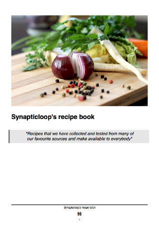
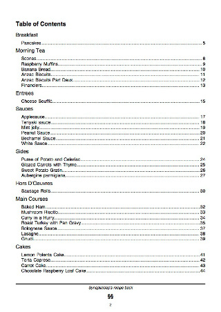
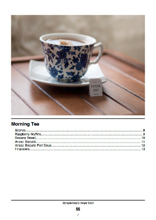
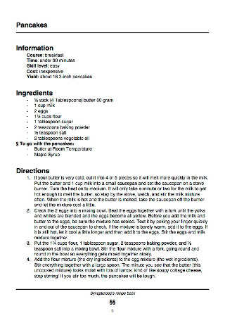

output
You can view the output documents here:
The PDF documents that are output have the following sections.
The front page
The front page includes an optional image, the title of the book and a sub-title (highlighted in grey).
The footer
The footer is on every page - and consists of the following:
- The book title which is a link back to the top of the page
- The page number
The table of contents
Each of the section headings are a link to the section area of the book.
Each of the recipe names are links to the actual recipes
Section pages
The section front page includes an optional image, the section name and a mini table of contents for all of the recipes in the section.
Recipe pages
The recipe page provides the note, information, ingredients and directions to make the recipe.